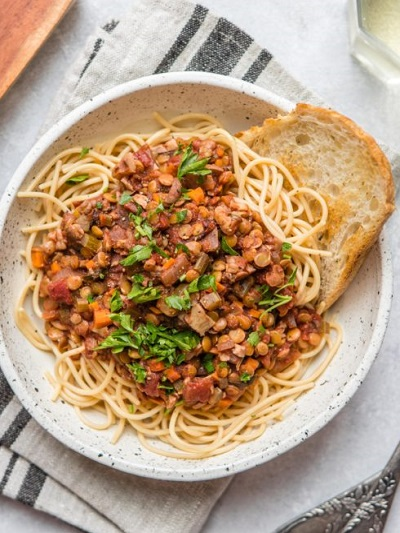

A hearty bolognese with lentils, and loads of veggies, so it's packed full of plant protein and goodness.

Ingredients
Below is a list of required ingredients:
Olive oil 2 tsp
Onion 1
Garlic 2 cloves
Capsicum red 1
Lentils brown 1 400ml can
Textured Vegetable Protein 3 tbsp
Balsamic vinegar 1 tbsp
Mushroom swiss-brown 5
Spaghetti 300g
Parsley leaves 2 tbsp
Garlic Bread
Parsley leaves 2 tbsp
Garlic 3 cloves
Olive oil 1 tbsp
Sourdough loaf
How to make!
Heat the oil in a large frying pan over medium-high heat. Add the onion and saute for 30 seconds, then add the garlic and capsicum and saute for another 30 seconds.
Stir through tomatoes, lentil, TVP, balsamic vinegar, mushroom and 250ml of water. Reduce heat to medium-low and simmer for 20minutes or until reduced, then season to taste with salt.
Meanwhile, preheat the oven to 180c fan-forced.
Bring a large saucepan of salted water to the boil and cook the spaghetti according to the packet instructions.
To make the garlic bread, use a mortar and pestle to pound the parsley, garlic, oil and salt to make a paste. Spread the paste onto the sourdough slices, then place on a baking tray and bake for 5 minutes or until golden.
Draining the spaghettic and divide among serving bowls. Spoon the bolognese over the top and scatter over the parsley. Season with salt and pepper and serve garlic bread on the side.
Tip
Avoid overcooking the spaghetti otherwise it will fall apart when serving.